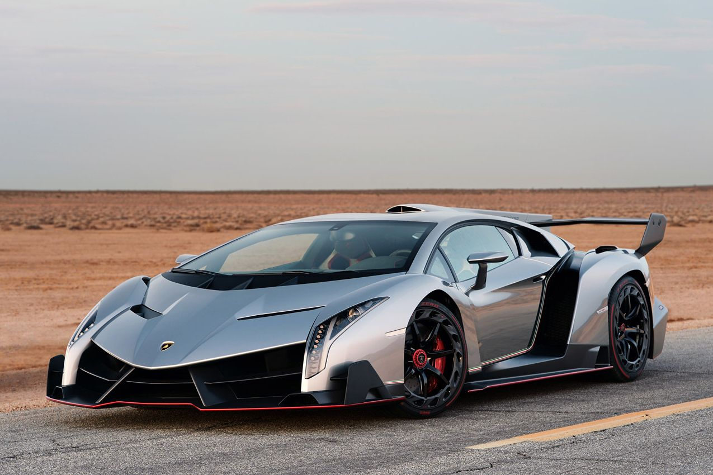
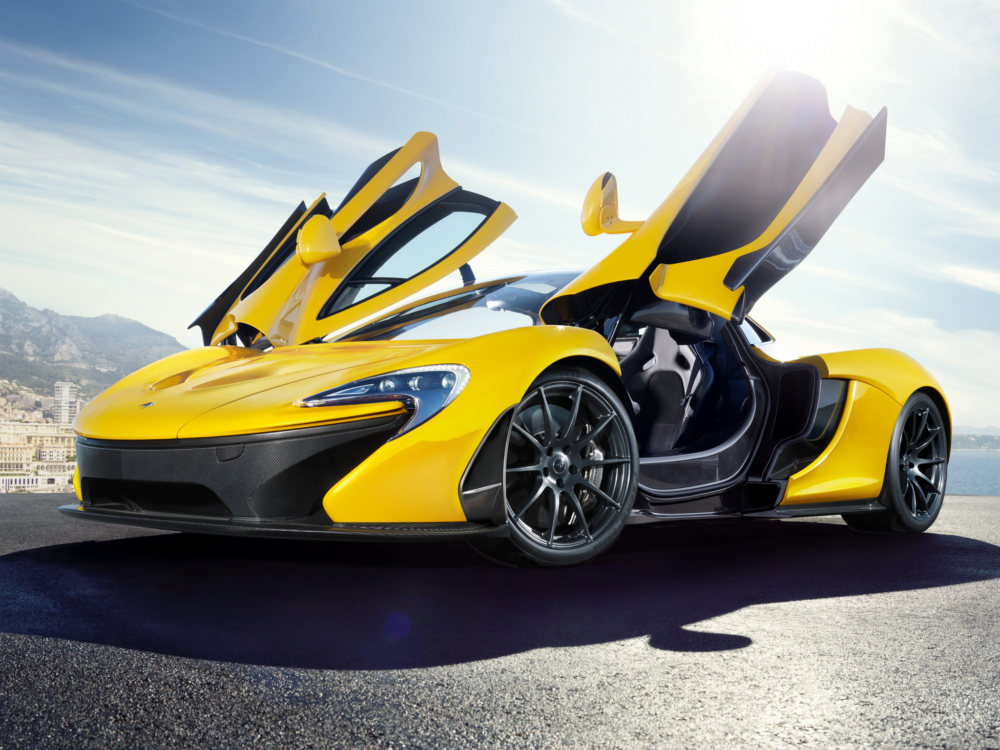
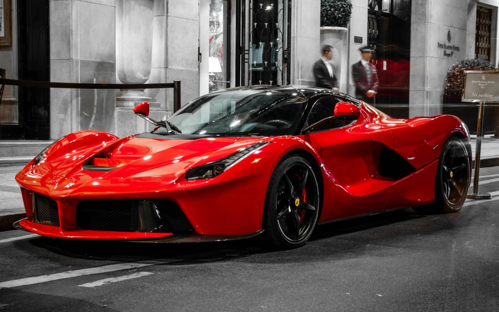
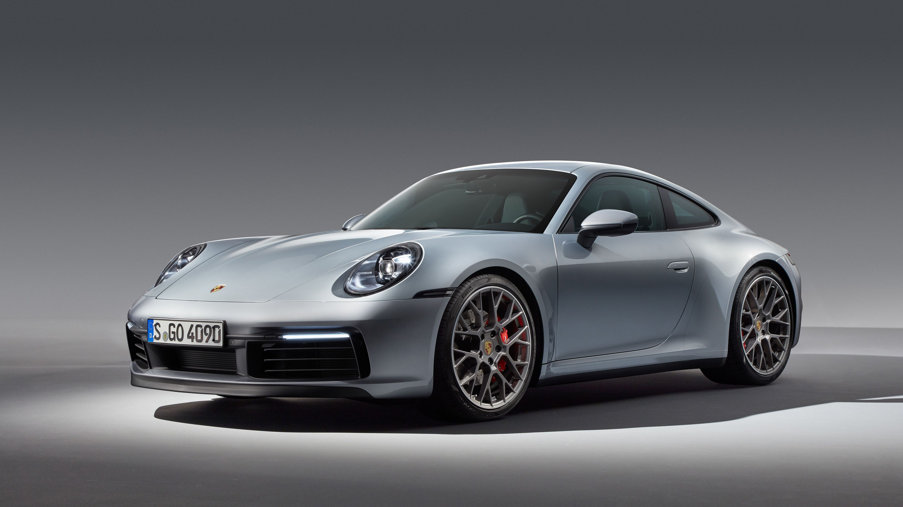

The Mercedes-AMG GT
The completely redeveloped AMG RIDE CONTROL+ suspension with an even greater distribution of uncompromising dynamics and excellent comfort: It will do more than surpass your expectations.

The BMW M4 Competition
The M BMW 4 Series Coupe cars impressively combine aesthetic appeal, charisma and the signature sporty style of M. Leading the trio is the BMW M4 Competition Coupe with an impressive 510 hp of power and 650 Nm of torque.
Characteristics

The Pagani Huayra
The Huayra has a top speed of about 383 km/h (238 mph) and it has a 0-97 km/h (60 mph) acceleration time of 2.8 seconds. Using Pirelli tyres, the Pagani Huayra is capable of 1.66 g of lateral acceleration.
Characteristics
The Lamborghini Veneno
The engine is a development of the Aventador's 6.5-litre V12 and generates a power output of 750 PS (552 kW; 740 hp) at 8,400 rpm and 690 N⋅m (509 lb⋅ft) of torque at 5,500 rpm. The increase in power was achieved by enlarging the air intakes and modifying the exhaust system.
Characteristics
The McLaren P1
The P1 features a 3.8 L; 231.8 cu in twin-turbocharged V8 engine. The twin turbos boost the petrol engine at 1.4 bar to deliver 542 kW at 7,500 rpm and 531 lb⋅ft of torque at 4,000 rpm, combined with an in-house-developed electric motor producing 132 kW and 192 lb⋅ft of torque. The electric motor and the petrol engine in the P1, produce a combined power output of 674 kW and 900 N⋅m of torque.
Characteristics

The Bugatti Divo
The car takes inspiration from the Bugatti Type 57SC Atlantic along with the Bugatti Vision Gran Turismo concept in terms of design and has track performance as its main focus. The car includes a redesigned exhaust system featuring quad exhaust pipes, a 1.8 metre wide fixed rear wing
Characteristics
The Ferrari LaFerrari
LaFerrari is the first full hybrid produced by the Italian automotive marque, providing the highest power output of any Ferrari road car whilst decreasing fuel consumption by 40 percent. The KERS system adds extra power to the combustion engine's power output level for a total of 963 PS and a combined torque of 900 N⋅m.
Characteristics
The Porsche 911
The 991 introduced in 2011 for the 2012 model year is an entirely new platform, only the third since the original 911. Porsche revealed basic information on the new Carrera and Carrera S models on 23 August 2011. The Carrera is powered by a 355 PS 3.4-litre engine. The Carrera S features a 3.8-litre engine rated at 406 PS. A Power Kit is available for the Carrera S, increasing power output to 436 PS.
Characteristics